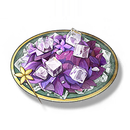

Iced Perilla
Supplies

Increase the Crit. Rate of all Resonators in the team by 10%, lasting 15 minutes, only effective for your own Character in multiplayer games.
The chilled Perilla brings out its herbal aroma, cool and slightly astringent, which is particularly favored by Baizhi.
Research is not easy, and when Baizhi is stuck and can't find a way out, she often brings out the chilled Perilla she prepared in advance for a short break. The coolness spreads from the tip of the tongue to the back of the brain, and the thoughts gradually calm down... The time it takes to finish a plate is just enough for Baizhi to clear her thoughts.